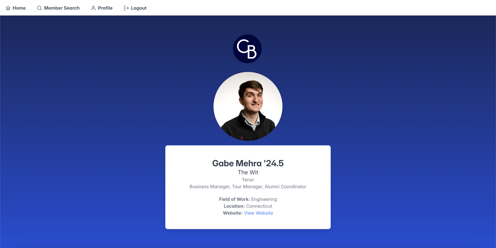

Gabe Mehra
I'm a software and AI engineer at Amazon, where I work on Alexa Edge AI Services. I build and ship LLM-based agents end to end, from model and guardrail design through cross-team delivery. I studied Computer Science and Music at Harvard University (graduated December 2024). I love music, and I'm passionate about how technology can advance artistic expression.
Experience
Software Development Engineer
- Drove a cross-team AI ticket-triage agent end to end to reduce repeat on-call engineering work, coordinating across teams from problem definition to delivery (Java, TypeScript, Python).
- Owned an end-to-end testing framework for Alexa's Follow-Up-Mode enablement Lambda, driving it across dependencies to completion.
- Automated data pipelines for Alexa's automatic media detection, saving ~10 developer-hours weekly.
- Contributed technical judgment to 15 design-document reviews, evaluating space/time complexity tradeoffs, extensibility, and edge-case/error handling across components owned by other teams.
- Consistently applied AWS best practices (the AWS Golden Path) across designs and implementations.
Software Engineer Intern
- Reduced single-feature cost by ~86% by relieving cloud-compute strain (C++, Python).
- Built the case, with data, that Alexa's whisper detection is best run on-device, and presented the recommendation to a multi-team panel of Amazon engineers and managers.
- Demoed a new feature on an Alexa device to cross-functional stakeholders.
Generative AI Music Course Assistant
- Designed a Transformer model and post-processing pipeline to generate MIDI scores, trained on representational music to predict the next note rather than the next word.
- Integrated the tool with a piano keyboard for live input processing.
ML and Software Engineering Intern
- Shipped a production LLM-based AI agent end to end for a clinical research setting (NIH-funded R&D), delivering an interactive agent with a user-facing interface at an early-stage startup.
- Engineered the agent's safety guardrails using input/output logistic-regression and LLM classification to keep the autonomous system on-track, improving correct classification by 50-60%.
- Shaped the product roadmap and built the full stack: Python, Flask, JavaScript, TypeScript, Node.js, PostgreSQL, Google Cloud, LLM API integrations.
Associate Software Development Intern
MACH37 is an "acclerator" company that specializes in very early stage cybersecurity startups. While I was working there, I built a dynamic web application for MACH37 to run their Fall and Spring 2022 acclerator programs. The web app includes a Calendly style scheduling feature between two users, a Google Forms style assignment feature, and a feature that allows other types of users to give feedback ratings on those assignments.
Insurance Intern
REX is a company that guides its clients, everyday citizens, through the process of buying a home. While there, I worked with the insurance team creating reports and analytics for the company to help reach insurance policy attachment goals and improve company yield and service usage. I automated several internal insurance processes within Salesforce and I improved upon current internal insurance team work-flows. I also identified problems in data storage / data cleanliness.
Projects
Prediction Market Making Bot
An automated market-making system for prediction markets that continuously quotes both sides of a market. Built around a plug-and-play architecture where pricing, risk and exchange components can be swapped through configuration. Includes a replay engine for testing changes against recorded market data, side-by-side comparisons of strategy variants, built-in risk limits and safety stops, and a performance report that breaks down where profit and loss come from. Runs 24/7 in the cloud.
Senate Pick'em 2026
A 16-bit style pick'em game for the 16 most competitive 2026 U.S. Senate races. Pulls live polls (with polling averages calculated in the page) and live prediction-market odds from Polymarket, and falls back to a built-in snapshot if either source is down. A single static page, live at senatepicks.com.
The Harvard Callbacks Network
A networking platform for alumni and undergraduate members of my college a cappella group, The Harvard Callbacks, to connect and search via location and field of work. Contains an anonymous emailing feature and personalized profile editing.

Text to Music Machine Learning Tool
LoRA fine-tuning of a Contrastive Learning guided Stable Audio Diffusion model using the MusicCaps dataset.
read our paper!Musical Melody Completion Tool
A tool for musicians to complete their musical ideas. Transformer Model that predicts the next note instead of the next word. Trained on several hundred German Folk songs to complete a melodic thought. Outputs to a Musescore musicxml file.
Harmony Hero: A Vocal Training Music Game
A Vocal Training Game! Uses pitch detection software to track the user's pitch. Calculates score by awarding more points for a more accurately sung note. Sing and match the the notes on screen by seeing the relative position. Can choose up to three different songs!

Texas Hold-em
Python that simulates the general rules and scoring of Texas hold'em. Makes use of hierarchical class structures. Deals hands to a variable number or players, and the winner is decided based on comparative hand (card) scores. Hand scores are determined based on the actual rules of Texas Hold-em.
you can access it here!Productivitee
Productivitee is a chrome extension that allows the user to monitor exactly how long they are spending on unproductive websites. The extension can be interacted with by clicking on the icon in the top right hand corner of your chrome browser. When installed and switched on, the extension will begin tracking the amount of time the user spends on a list of "unproductive" websites.
click here to see the code!Due to changes in Javascript that dictate the maximum number of calls you can make to a function in a single minute of real time, the extension needs to updated.
However, here is a video of it working when first created:
Education
Harvard University
Secondary: Music
Relevant coursework: Data Structures & Algorithms (CS124), AI & ML (CS182), Advanced Machine Learning Concepts (CS242), Probability (Stat110), Systems & Machine Organization (CS61), Signal Processing (ES156), MIT Music Systems (21M.385).
Brunswick High School
Skills
Python, Java, TypeScript, JavaScript, C++, Node.js, Flask, PostgreSQL, AWS, Google Cloud.
LLM agent development, guardrails & evaluation, model training, RAG/tool-use integration, PyTorch, generative models.
Cross-team delivery, technical communication, stakeholder alignment, design review.
Interests
Apart from being incredibly passionate about music in my professional life, I also compose & produce music on Ableton Live in my free time. I have built instruments using breadboards, arduinos, and Ableton. I sang Tenor in the Harvard Callbacks a cappella group at school. I also was the Business and Tour manager of the group.
Apart from music, I played varsity squash, and I play squash and golf in my free time. I also enjoy Spanish and Italian, and I love indie video games like Undertale and Earthbound. Maybe one day I'll develop my own video game! (and make the music?)